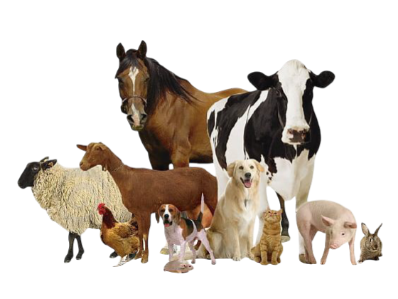
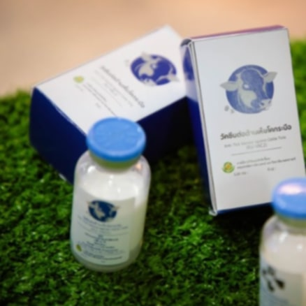

ກ່ອນອື່ນ ພວກເຮົາຕ້ອງມາຮູ້ກ່ອນວ່າ: ການປ້ອງກັນສັດດ້ວຍການສັກຢາວັກຊີນ ຈຳເປັນຫຼາຍຕໍ່ສັດ ແລະ
ຜູ້ລ້ຽງສັດຢ່າງເຮົາ ໂດຍສະເພາະແມ່ນຜູ້ທີ່ລ້ຽງສັດໃກ້ຊິດກັບຄົນເຊັ່ນ : ໝາ, ແມວ ເປັນຕົ້ນ ສະນັ້ນເຮົາຈື່ງຈຳເປັນຫຼາຍ
ຕໍ່ການສັກຢາວັກຊີນສັດ ດ້ວຍເຫດຜົນຫຼັກໆຄື :
1. ປ້ອງກັນໂລກຮ້າຍແຮງສຳຫຼັບສັດ:ວັກຊີນຊ່ວຍປ້ອງກັນໂລກທີ່ອາດເປັນອັນຕະລາຍເຖິງຊີວິດສັດ ເຊັ່ນ
ໂລກພິດສຸນັກບ້າ ໂລກຫັດແມວ ເປັນຕົ້ນ
2. ປ້ອງກັນການແຜ່ສູ່ຄົນ: ບາງໂລກສາມາດຕິດຕໍ່ຈາກສັດສູ່ຄົນໄດ້ ເຊັ່ນ ໂລກພິດສຸນັກບ້າ ຖ້າຫາກສັດໄດ້ຮັບວັກຊີນ
ກໍຈະຊ່ວຍລົດຄວາມສ່ຽງຕໍ່ຄົນຮອບຂ້າງ
3. ຫຼຸດຜ່ອນຄ່າຮັກສາພະຍາບານ: ການສັກວັກຊີນ ມີຄ່າໃຊ້ຈ່າຍຕໍ່າກວ່າການຮັກສາເມື່ອສັດອາການປ່ວຍໜັກ
4. ເພິ່ມອາຍຸ ແລະ ຄຸນນະພາບຊີວິດຂອງສັດ: ສັດທີ່ໄດ້ຮັບວັກຊີນ ມີແນວໂນ້ມທີ່ຈະມີຊິວິດຢືນຍາວ ແຂງແຮງ ແລະ
ມິຄຸນນະພາບຊີວິດທີ່ດີກວ່າ
5. ສ້າງຄວາມໝັ່ນໃຈໃຫ້ກັບຜູ້ລ້ຽງ: ການຮູ້ວ່າສັດໄດ້ຮັບການປ້ອງກັນໂລກ ຊ່ວຍໃຫ້ເຈົ້າຂອງສະບາຍໃຈຂື້ນ ແລະ ກ້າພາສັດລ້ຽງໄປທີ່ສາທາລະນະຫຼາຍຂື້ນ ແຮັບປີ້ທັງສັດແລະຜູ້ລ້ຽງ
ແລະສຳຫຼັບສັດຄອກ ເຊັ່ນ : ງົວ, ຄວາຍ, ໝູ, ແບ້, ໄກ່, ເປັດ ໆລໆ ກໍມີຄວາມຈຳເປັນຕ້ອງໄດ້ຮັບວັກຊີນຄືກັນ ສາເຫດເປັນຕົ້ນແມ່ນ:
1. ປ້ອງກັນໂລກລະບາດຮຸນແຮງ: ວັກຊີນຊ່ວຍປ້ອງກັນໂລກຕິດຕໍ່ ທີ່ອາດແຜ່ລະບາດໄດ້ງ່າຍໃນໝູ່ສັດ ເຊັ່ນ: ພະຍາດປາກເປື່ອຍລົງເລັບ, ພະຍາດນິວຄາເຊີນ, ພະຍາດອະທິວາສັດປີກ ເປັນຕົ້ນ.
2. ລົດຄວາມເສຍຫາຍທາງເສດຖະກິດ : ການລະບາດຂອງໂລກໃນຟາມ ສາມາດເຮັດໃຫ້ສັດລົ້ມຕາຍ ຫຼື ຈະເລີນເຕີບໂຕຊ້າ ເຊິ່ງສົ່ງຜົນຕໍ່ລາຍໄດ້ຂອງກະເສດຕະກອນ.
3. ຮັກສາຄຸນນະພາບອາຫານ : ການຄວບຄຸມພະຍາດດ້ວຍວັກຊີນ ຊ່ວຍໃຫ້ຜະລິດຕະພັນຈາກສັດ ເຊັ່ນ:ເນື້ອ, ນົມ, ໄຂ່ ມີຄຸນນະພາບຕໍ່ຜູ້ບໍລິໂພກ.
4. ລົດການໃຊ້ຢາປະຕິຊິວະນະ : ການປ້ອງກັນພະຍາດ ດ້ວຍວັກຊີນ ຊ່ວຍລົດການໃຊ້ຢາປະຕິຊິວະນະຊິ່ງອາດກໍ່ໃຫ້ເກີດປັນຫາດື້ຢາ.
5. ຮອງຮັບການຄ້າລະຫວ່າງພາຍໃນປະເທດ ແລະ ຕ່າງປະເທດ : ເພີ່ນກຳນົດມາດຕະການດ້ານສຸຂະພາບສັດໄວ້ສູງ ການສີດວັກຊີນ ຈື່ງເປັນສິ່ງຈຳເປັນໃນການສົ່ງອອກສິນຄ້າ.
